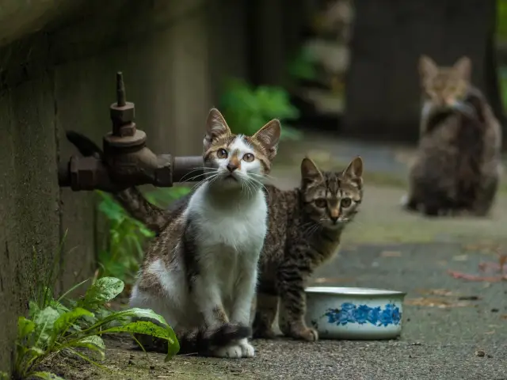
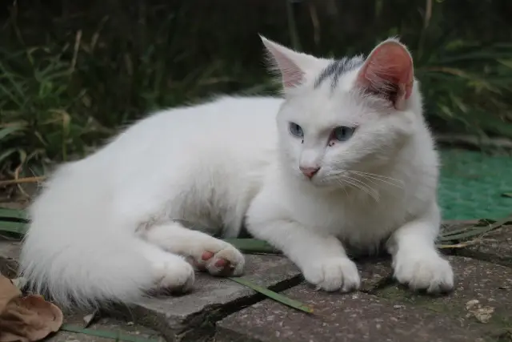

O abrigo surgiu da iniciativa de moradores que resgatavam cães abandonados e os acolhiam em suas casas. Com o tempo, criaram um projeto coletivo que resultou na construção de um espaço dedicado ao cuidado animal. Com apoio da comunidade e incentivos, nasceu a Animal Shelter.
História
Conscientização
Promovemos boas práticas no cuidado com animais e divulgamos campanhas voltadas a tutores. A adoção responsável é um dos nossos principais pilares.
Missão
Oferecer refúgio temporário a animais até que encontrem um lar definitivo, promovendo empatia e vínculos afetivos.
Visão
Resgatar animais de ambientes inadequados, garantindo qualidade de vida e segurança.
Valores
Empatia, cuidado com animais e pessoas, organização transparente e uso de tecnologia para gestão informacional.
Objetivos
- Conscientizar sobre os riscos enfrentados por animais abandonados ou maltratados.
- Orientar sobre adoção e doação de animais.
- Compartilhar informações sobre cuidados básicos com pets.
Galeria

Foto 1

Foto 2

Foto 3

Foto 4

Foto 5

Foto 6

Foto 7

Foto 8

Foto 9
Planos Futuros
- Melhorar a infraestrutura para ampliar a capacidade de atendimento.
- Construir área técnica para procedimentos veterinários.
- Investir em tecnologia para apoio à pesquisa e gestão.
- Expandir para centro de apoio à pesquisa e controle de zoonoses.
- Atender espécies diversas e atuar na preservação de animais ameaçados.